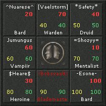
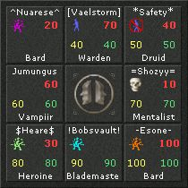
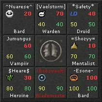

Widgets are small icons used to provide an additional "visual" indication when a group member is nearsighted, out of zone, link dead, dead, poisoned, mezzed, and diseased. These options allow you to change the style of the widgets usedin the Healer Helper windows.


